Kapitel 6 - Lineare Transformationen in der Ebene#
6.1 Lernziele#
In diesem Abschnitt wollen wir lineare Transformationen in der Ebene mittels Matrizen genauer untersuchen.
Lernziele
Zusammenhang zwischen einer \(2\times 2\) Matrix und einer geometrischen Transformationen
Skalierungsmatrizen interpretieren und anwenden.
Spiegelung als Matrixtransformation interpretieren und anwenden.
Rotation als Matrixtransformation interpretieren und anwenden.
Praxisbeispiel für die Bildbearbeitung in Python kennenlernen
6.2 Einführung#
Wir konzentrieren uns in diesem Kapitel vor allem auf den \(\mathbb{R}^2\). D.h. wir betrachten Transformationen in der Ebene.
Wir zeigen zunächst wie wir Matrizen \(A\in \mathbb{R}^{2\times 2}\) als geometrische Transformationen interpretieren können.
Dies geschieht durch folgende Interpretation von Matrizen als Abbildungen.
Definition 48
Sei \(A\in \mathbb{R}^{m\times n}\), so ist die lineare Transformation von \(A\) definiert als die folgende Funktion
Wir nennen die Matrix \(A\) zu der linearen Transformation \(T_A\) die Abbildungsmatrix.
Falls \(A\in \mathbb{R}^{2\times 2}\), so nennen wir die entsprechende lineare Transformation eine lineare Transformation in der Ebene.
Remark 3
Obige Definition ist wohldefiniert. Dafür betrachten wir einmal kurz die Dimensionen.
Wenn \(A\in \mathbb{R}^{m\times n}\) und \(v\in \mathbb{R}^n=\mathbb{R}^{n\times 1}\) so gilt nach der Dimensionsformel (\((m\times n)\cdot (n\times 1)\)), dass das Ergebnis die Dimension \((m\times 1)\) besitzt, also ein \(m\)-dimensionaler Spaltenvektor.
Für \(A\in \mathbb{R}^{2\times 2}\) bedeutet dies, dass wir einen 2-dimensionalen Vektor auf einen 2-dimensionalen Vektor abbilden.
Lineare Transformationen (der Ebene) haben die folgende Eigenschaft, die charakteristisch für Linearität steht.
Theorem 21
Sei \(A\in\mathbb{R}^{2\times 2}\) eine Matrix und \(T_A\) die zugehörige lineare Transformation.
Der Nullvektor wird wieder auf den Nullvektor abgebildet.
Geraden werden wieder auf Geraden abgebildet.
Parallel Geraden bleiben Parallel.
Example 52
Nach obigem Satz sehen wir, dass die Translation/Verschiebung eines Objektes keine lineare Transformation darstellt, da der Nullvektor nicht wieder auf den Nullvektor abgebildet wird.
Wir werden jedoch sehen, dass die folgenden Transformationen linear Transformationen darstellen:
Spiegelung
Skalierung
Rotation
Example 53
Sei \(A=\left(\begin{array}{ll}1 & 2 \\ 2 & 1\end{array}\right)\).
Um die Lineare Transformation genauer zu verstehen ist es häufig hilfreich sich zu Visualisieren wie die Vektoren \(e_1=\left(\begin{array}{c} 1 \\ 0 \end{array}\right)\) und \(e_2=\left(\begin{array}{c} 0 \\ 1\end{array}\right)\) transformiert werden. Wie man leicht nachrechnet werden diese auf die Vekotoren \(Ae_1=\left(\begin{array}{c}1\\2\end{array}\right)\) und \(Ae_2=\left(\begin{array}{c}2\\1\end{array}\right)\), transformiert. 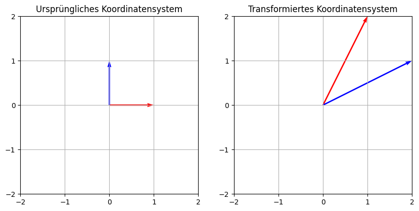
Wir können nun auch betrachten was passiert wenn wir die Punkte eines Dreiecks transformieren: 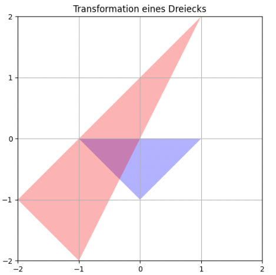.
Wir sehen, dass das Dreieck wieder ein Dreieck ist, aber die Längen und Winkel sich unterscheiden. Wir sehen, aber auch das beide Dreiecke den Nullpunkt beinhalten.
6.3 Skalierung als lineare Transformation.#
Skalierung bedeutet Strecken und Stauchen von geometrischen Objekten.
Mittels der skalaren Multiplikation mit einem positiven \(lambda>0\) können wir via \( v\mapsto \lambda \cdot v\) eine einfache mathematische Beschreibung von Streckung und Stauchung. Sie ist eine Streckung falls \(\lambda >1\) und eine Stauchung falls \(\lambda <1\)
In Matrixform können wir dies auch so schreiben:
Wollen wir in \(x\) und \(y\) Richtung mit verschiedenen Streckungsfaktoren arbeiten so können wir allgemein eine Streckungsmatrix via
Machen wir wieder ein Beispiel:
Example 54
Wir betrachten nun die Matrix
Wieder betrachten wir zunächst die transformierten Basisvektoren 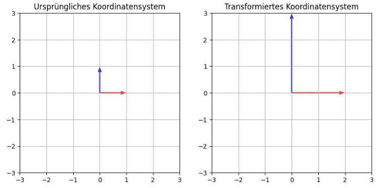
Und nun ein transformiertes Dreieck 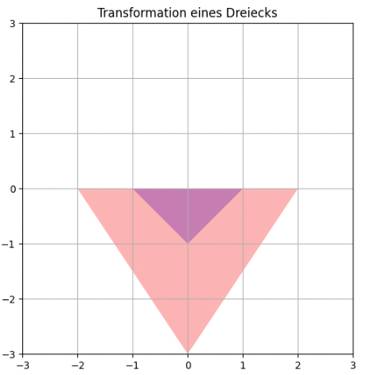
Wir sehen, dass die Grundlinie des Dreiecks sich verdoppelt, und die Höhe des Dreiecks sich verdreifacht.
6.4 Spiegelung als lineare Transformation#
Spiegelung lassen sich auch als lineare Transformationen abbilden. Dabei gibt es drei Möglichkeiten in der Ebene zu spiegeln:
Punktspiegelung
Spiegelung an der \(y\)-Achse
Spiegelung an der \(x\)-Achse
Ähnlich wie Dehnung/Streckung lassen sich die Matrizen mit Diagonalmatrizen darstellen. Nur dieses mal erlauben wir auch explizit negative Zahlen.
Hier ist der Überblick über die Spiegelung:
Matrix |
geom. Bedeutung |
|
|---|---|---|
S(-1, 1) |
\(\begin{pmatrix}-1 & 0 \\ 0 & 1\end{pmatrix}\) |
Spiegelung an der y-Achse |
S(1, -1) |
\(\begin{pmatrix}1 & 0 \\ 0 & -1\end{pmatrix}\) |
Spiegelung an der x-Achse |
S(-1, -1) |
\(\begin{pmatrix}-1 & 0 \\ 0 & -1\end{pmatrix}\) |
Punktspiegelung am Ursprung |
Example 55
Wir betrachten nun die Matrix
Also die Spiegelung an der \(y\)-Achse Wieder betrachten wir zunächst die transformierten Basisvektoren 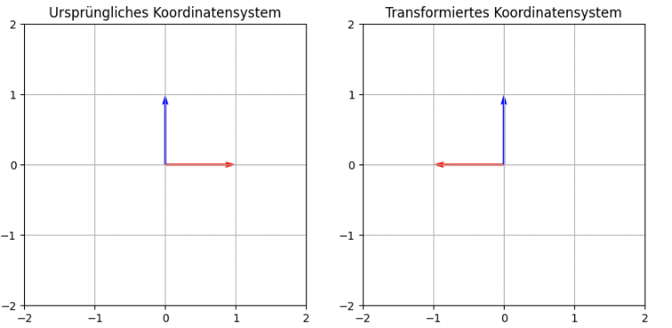
Und nun ein transformiertes Dreieck 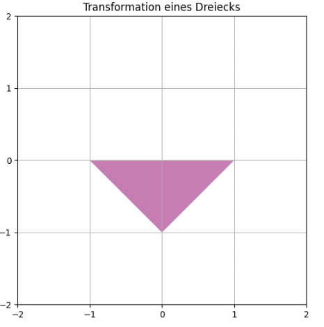
Wir sehen, dass das transformierte Dreieck identisch mit dem ursprünglichen Dreieck ist, da es Achsensymmetrisch zur \(y\)-Achse ist.
Wir können zum Beispiel den unteren Punkt nehmen und dies nachvollziehen:
D.h. der Punkt bleibt wo er ist.
Es kann nun leicht nachgerechnet werden, dass die beiden anderen Punkte miteinander tauschen.
6.5 Rotation als lineare Transformation#
Die Rotation ist die Komplizierteste Variante der linearen Transformation. Dabei stellt sich zunächst die Frage in Welche Richtung und welchen Winkel. Dabei ist wichtig, dass Mathematisch positive Richtung immer gegen den Uhrzeigersinn darstellt. Wenn wir also von einer Drehung um 90° sprechen, dann meinen wir eine Drehung um 90° gegen den Uhrzeigersinn.
Wir betrachten zunächst ein Beispiel.
Example 56
Wir wollen die 90°-Drehung als Matrix darstellen. Dafür müssen wir überlegen auf welche Vektoren wir die beiden Basisvektoren \(e_1=\left(\begin{array}{c} 1 \\ 0 \end{array}\right)\) und \(e_2=\left(\begin{array}{c} 0 \\ 1 \end{array}\right)\) abgebildet werden. \(e_1\) muss auf den Vektor \(\left(\begin{array}{c} 0 \\ 1 \end{array}\right)\) abgebildet werden und \(e_2\) auf \(\left(\begin{array}{c} 0 \\ -1 \end{array}\right)\).
Damit ergibt sich folgende Matrix:
Und es ergeben sich folgende Bilder:
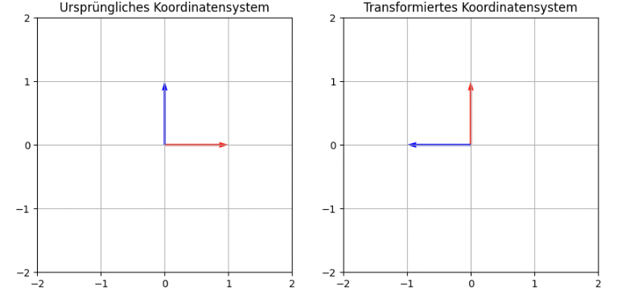
Und nun ein transformiertes Dreieck 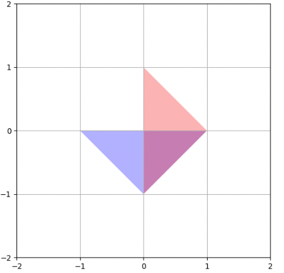.
Wir haben nun die Rotation für 90° gesehen. Doch was ist die Allgemeine Formel.
Diese fassen wir im folgenden Satz zusammen.
Theorem 22
Der Ausdruck \(R(\varphi)\) bezeichnet eine Rotation um den Winkel \(\varphi\) mit dem Ursprung als Rotationszentrum. Sie lässt sich durch folgende Matrix darstellen.
Hier ist eine Tabelle mit den Wichtigsten Rotationsmatrizen:
Winkel (\(\theta\)) |
Rotationsmatrix (\(R(\theta)\)) |
geom. Bedeutung |
|---|---|---|
\(0^\circ\) |
\(\begin{pmatrix} 1 & 0 \\ 0 & 1 \end{pmatrix}\) |
Keine Rotation (Identitätsmatrix) |
\(90^\circ\) |
\(\begin{pmatrix} 0 & -1 \\ 1 & 0 \end{pmatrix}\) |
Rotation um \(90^\circ\) |
\(180^\circ\) |
\(\begin{pmatrix} -1 & 0 \\ 0 & -1 \end{pmatrix}\) |
Rotation um \(180^\circ\) |
\(270^\circ\) |
\(\begin{pmatrix} 0 & 1 \\ -1 & 0 \end{pmatrix}\) |
Rotation um \(270^\circ\) |
6.6 Hintereinanderschaltung von Linearen Transformationen#
Angenommen wir wollen eine Kombination aus den obigen linearen Transformationen machen. Dann stellt sich die Frage, wie wir die zugehörige Matrix bekommen. Wollen wir zum Beispiel erst Rotieren und dann Skalieren.
Der folgende Satz liefert dafür die entsprechende Antwort.
Theorem 23
Seien \(A,B\in \mathbb{R}^{2\times2}\). Seien \(T_A\) und \(T_B\) die entsprechenden linearen Transformationen. Sei weiter \(A\cdot B\) das Produkt der beiden Matrizen und \(T_{A\cdot B}\) die entsprechende lineare Transformation. Dann gilt:
Anders ausgedrückt: die Hintereinanderausführung von zwei linearen Transformationen entspricht auf der Ebene der Matrizen der Matrixmultiplikation.
Auch hierfür wollen wir ein Beispiel betrachten:
Example 57
Wir wollen in diesem Beispiel zunächst um 90° Drehen und dann an der \(y\)-Achse spiegeln. Die entsprechende Matrix ist dann laut obigem Satz:
Beachte auch hier dass wir von rechts nach links lesen. rechts steht die Rotation, weil wir diese als erste ausführen.
Schauen wir uns nun die entsprechenden Bilder an
Zunächst die Transformation auf den Basisvektoren: 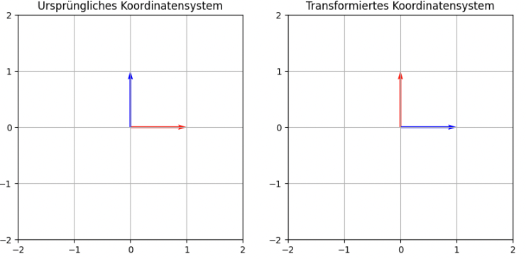
Und nun auf unser Standard Dreieck: 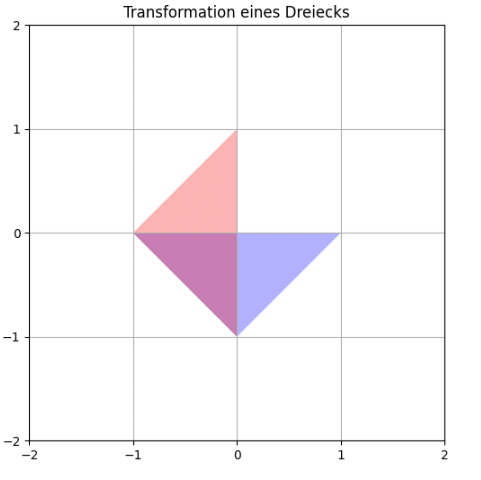 Auf dem ersten Blick sieht das nun so aus wie eine Drehung um 90° in mathematisch negativer Richtung oder im Uhrzeigersinn. Dies liegt aber an der Symmetrie des Dreiecks. Betrachten wir ein weiteres Dreieck: 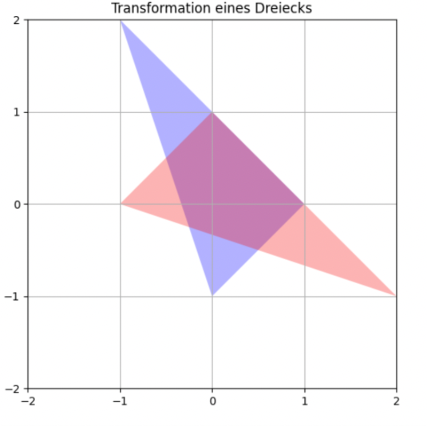 Hier sehen wir, dass es keine Rotation ist.
Sehen Sie wie man die Transformation geometrisch zusammenfassen kann? Antwort:
Es ist die Spiegelung um die Winkelhalbierende des ersten Quadranten, oder der Gerade \(y=x\).
6.7 Anwendung zur Bearbeitung von Bildern#
Wir wollen unsere neuen Fertigkeiten nun nutzen um Bilder zu spiegeln, rotieren oder zu Skalieren. Betrachten Sie dafür folgendes Video.